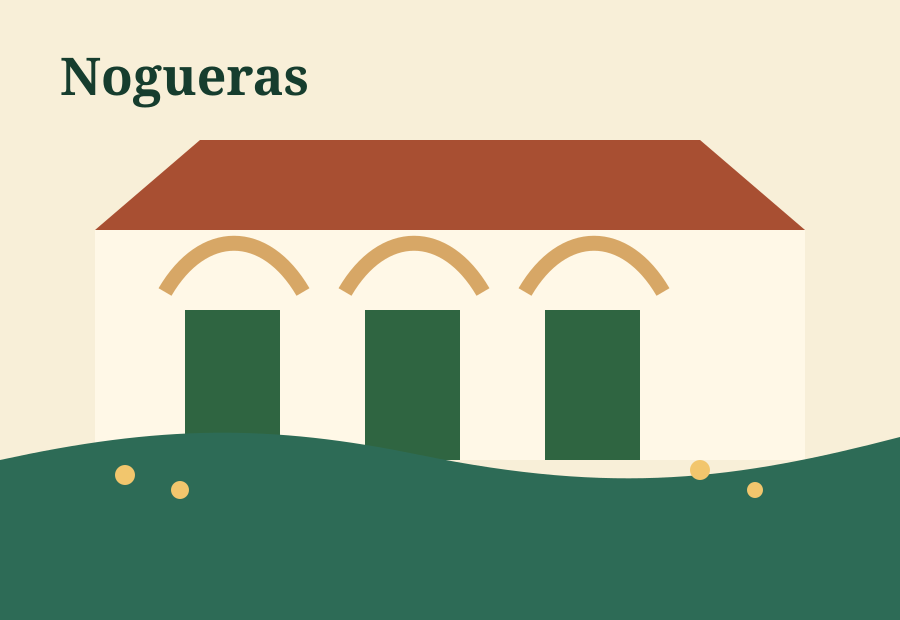
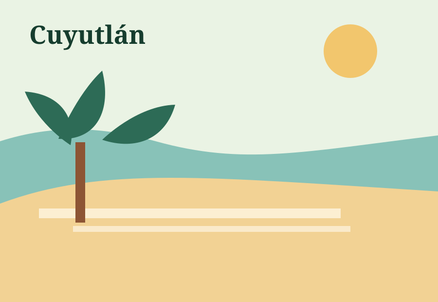

Pueblo Mágico
Comala: plaza, cafés, ponche, volcano views
Traditional white houses, red-tile roofs, arcades, cafés, food, and a slow-town feel under the Volcano of Fire.
Use this page like a Pinterest board and a mini Expedia guide. Filter by vibe, save places to the plan, and build a trip around Comala, Colima City, Nogueras, Cuyutlán, rivers, haciendas, food, and the state’s pueblo-style municipalities.
Tap a filter to narrow the guide. Tap “save to plan” to build a saved list on this device.
Traditional white houses, red-tile roofs, arcades, cafés, food, and a slow-town feel under the Volcano of Fire.

An old hacienda near Comala with gardens, workshops, art, and the Alejandro Rangel Hidalgo museum atmosphere.

Plan a relaxed walk for history, architecture, gardens, cafés, photos, snacks, and a family dinner nearby.

A volcanic lagoon area near Comala for easy trails, camping vibes, coffee, nature photos, and a cooler mountain feel.
Easy nature stop with greenery, a river landscape, birdwatching, a hanging bridge vibe, and nearby local food.

Water, salt tradition, coastal scenery, and a different side of Colima away from the bigger beach resort feeling.
Cool off in a river-style swimming spot with casual restaurants, tables, tubes, food, and a very family-friendly plan.
Green archaeological areas near Colima City for walking, learning, and adding a cultural stop before lunch.

Build one meal around tatemado, pozole, seafood, highland coffee, ponche, pan dulce, and family-style snacks.
Colima is small, but the state is officially divided into 10 municipalities. This board treats them like a starting point for exploring pueblos, beach towns, and family stops.
Day 1: Arrive, settle in, Colima Centro dinner.
Day 2: Comala + Nogueras + coffee/ponche.
Day 3: River/nature stop like Laguna La María or Suchitlán.
Day 4: Cuyutlán or Manzanillo beach day depending on where the group stays.
Light outfits, one nicer dinner outfit, swimwear, sandals, walking shoes, sunblock, hat, portable charger, pesos/cash, copies of IDs/passports, and a shared list of emergency contacts.